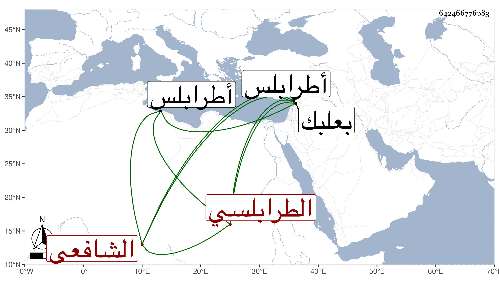

0902Sakhawi.DawLamic.ITO20230111-ara1.EIS1600.642466776083
Biography ID: 642466776083
635
محمد بن عمر بن أحمد بن سيف بن أحمد الطرابلسي الشافعي ويعرف بابن النيني بنونين الأولى مفتوحة بينهما تحتانية ولد في سنة تسع وستين وسبعمائة أو التي بعدها وسمع في سنة تسع وثمانين بطرابلس على محمد بن إبراهيم ابن أبي المواهب الشافعي وفي التي بعدها ببعلبك على الشريف أحمد بن محمد بن المظفر الحسيني ومحمد بن علي بن أحمد بن اليونانية ومحمد بن محمد بن أحمد الجردي القطان ثم على ابن صديق الصحيح قالوا أنا الحجار وحدث سمع منه الفضلاء وخطب بجامع التوبة ببلده وعرض عليه الصلاح الطرابلسي الحنفي في سنة ثمان وأربعين وكتب له إجازة وصف فيها العراقي بشيخنا ولكنه غلط في اسمه وسماه أبا حفص عمر . ومات قريبا من ذلك .
